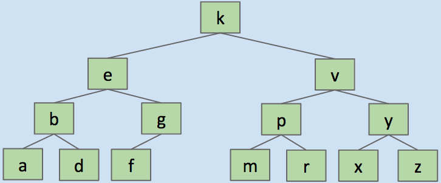
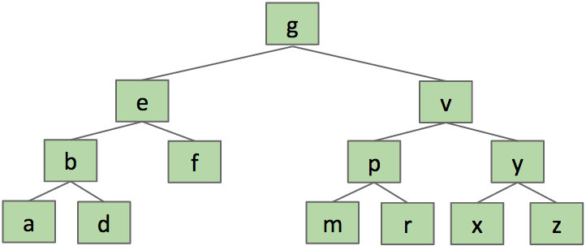

Ordered search tree of nodes and edges connecting nodes
Search in binary tree: compare search key to root's key, if less/greater than root, search recursively in left/right tree respectively; else return current node
static BST find(BST T, Key sk) {if (T == null)return null;if (sk.keyequals(T.label()))return T;else if (sk ≺ T.label())return find(T.left, sk);elsereturn find(T.right, sk);}
Inserting new key into tree:
static BST insert(BST T, Key ik) {if (T == null)return new BST(ik);if (ik ≺ T.label())T.left = insert(T.left, ik);else if (ik ≻ T.label())T.right = insert(T.right, ik);return T;}
Deleting a key from a BST:
Case 3 - two children:
Example before and after replacement:

